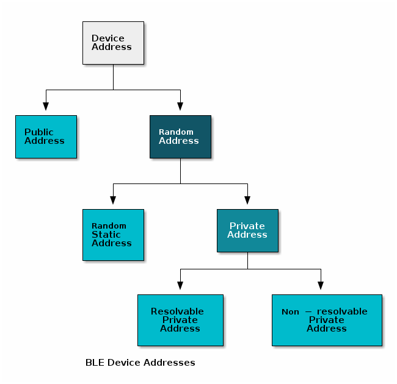
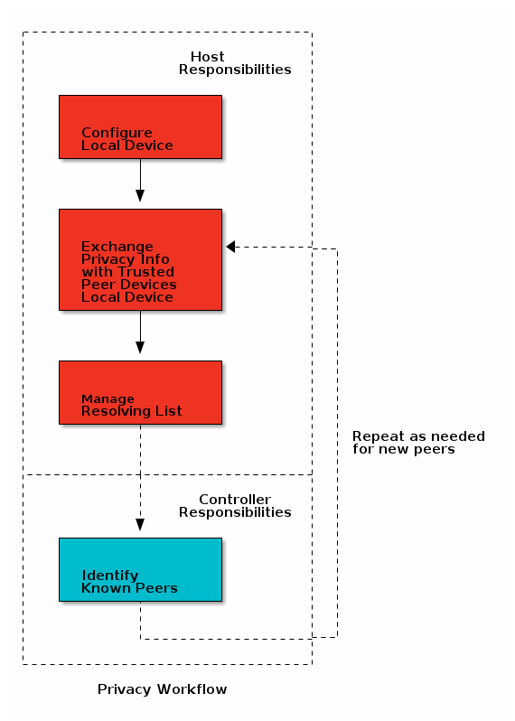

Privacy¶
The LE privacy feature allows devices to periodically generate new address to use over the air. This behavior greatly reduces the ability for a scanner to track broadcasting Bluetooth Low Energy devices over a period of time.
There are two privacy variants defined by the Bluetooth Core Specification Version 5.1: Controller-based and Host-based. In Host-based privacy, the Host is responsible for managing all aspects of the privacy feature - generating new addresses to use and resolving private addresses sent by peers to determine their identity. In Controller-based privacy, the privacy feature is largely implemented in the Link Layer of the Controller. However, interaction with the Host is required for configuration and to manage communication with other devices using privacy.
The BLE-Stack supports only the Controller-based privacy variant as defined by the Bluetooth Core Specification Version 5.1 (Vol 1, Part A, Section 5.4.5). The Link Layer privacy feature is always enabled in the BLE-Stack.
Privacy is discussed in the following sections of the Bluetooth Core Specification Version 5.1. It is suggested to review and familiarize yourself with these sections before continuing.
- Vol 1, Part A, Section 5.4.5 - Overview of the LE Privacy Feature
- Vol 2, Part E, Sections 7.8 - HCI Commands
- Vol 3, Part C, Section 10.7 - Privacy in the Host
- Vol 3, Part C, Section 12 - GAP Service and Characteristics for GATT Server
- Vol 6, Part B, Section 1.3 - Device Address
- Vol 6, Part B, Section 6 - Privacy in the Link Layer
The following terms are used throughout the Privacy section. It is suggested to review these terms before continuing.
Privacy and Address Types¶
Before going too in depth into a discussion of the BLE-Stack privacy implementation, one should have a thorough understanding about Device Address Types as defined by the Bluetooth Core Specification Version 5.1 and how they are used by the BLE-Stack. The section below is intended to refresh the key concepts in order to provide context for the topic of Privacy. For other important implementation details, see the Bluetooth Core Specification Version 5.1 or the BLE-Stack API Guide.
Device Addresses in the BLE Core Specification¶
According to the Bluetooth Core Specification Version 5.1, all Bluetooth device addresses can be divided into two types: Public (0x00) and Random (0x01). The Random address type can be categorized into two subtypes: Static or Private. The Private address subtype can be further divided into two subtypes: Resolvable or Non-Resolvable. These divisions can be visualized with the following tree:
Public Device Address¶
- Static - does not change during device lifecycle
- Can be used as an Identity Address
Random Static Device Address¶
- Static - does not change during device lifecycle. May change after a power cycle.
- Can be used as an Identity Address
(Random) Resolvable Private Device Address (RPA)¶
- Device Address changes over time
- Address can be matched, or resolved, to an Identity Address for tracking by trusted peers.
(Random) Non-resolvable Private Device Address¶
- Device Address changes over time
- Does not provide a way to link private device address to a static address
Using Device Addresses in BLE-Stack Applications¶
Configuring Local Device Address Mode
A BLE-Stack application configures its own device address mode with the
addrMode parameter of GAP_ConfigDeviceAddr(). This API must be
called after GAP_DeviceInit has completed and should not be called during
scanning or advertising. See Listing 66..
The modes that are supported by the BLE-Stack are:
| symbol | value | description |
| ADDRMODE_PUBLIC | 0x00 | the local device will only use a Public device address |
| ADDRMODE_STATIC | 0x01 | the local device will only use a Random Static device address |
| ADDRMODE_PRIVATE_NONRESOLVE | 0x02 | the local device will use an Non-Resolvable Private Address |
| ADDRMODE_PRIVATE_RESOLVE | 0x03 | the local device will always use an RPA that can be resolved to its Identity Address. The type of Identity Address used depends on whether or not a Random Static Address is passed to the GAP_ConfigDeviceAddr function. |
A BLE-Stack device can only change its address modes using GAP_ConfigDeviceAddr. By default, in the BLE-Stack, a Random Static address does not change after a power cycle and its identification information is stored in NV.
Interpreting Addresses in BLE-Stack Applications
Addresses can be received in GAP & GAP Bond Manager events. Address information can also be queried using LinkDB. When receiving Peer Address information, the values will be different depending on whether or not the peer device identity information is in the Resolving List or not. The address types that may be seen for peer devices is as follows:
| symbol | value | description |
| ADDRTYPE_PUBLIC | 0x00 | the corresponding device address is a Public address |
| ADDRTYPE_RANDOM | 0x01 | the corresponding device address is a Random address of any subtype |
| ADDRTYPE_PUBLIC_ID | 0x02 | the corresponding device address is using an RPA with a Public identity address. Receiving this type means the RPA was resolved in the Controller. |
| ADDRTYPE_RANDOM_ID | 0x03 | the corresponding device address is using an RPA with a Random Static identity address. Receiving this type means the RPA was resolved in the Controller. |
If a device adds the peer identity information to the resolving list, it will only receive the identity address in the application, not the RPA the peer is currently using.
If an RPA is received for a bonded device in an event, this means that the address is not present in the resolving list. The address can still be resolved to its identity address at the application’s discretion, but it will always receive ADDRTYPE_RANDOM when receiving messages from the Controller.
Communicating Address Information to Controller
When specifying the address type of a peer device, linkDB_GetInfo can be used
to the retrieve the correct address type. The linkDBInfo_t struct contains
an addrType field that can be used to send the correct address type to the
Controller.
Resolving Private Addresses¶
The addresses we generally use in privacy discussions are RPAs and Identity Addresses. As mentioned above, a device using an RPA periodically changes the address it uses over the air. This happens at a specified timeout interval. The addresses it uses are generated with an Identity Resolving Key (IRK). This key associates the Resolvable Private Address to an Identity Address that remains constant.
The privacy feature inhibits tracking from untrusted peer devices. However, some devices may need the ability to recognize, and be recognized by, their peer devices after their RPA has changed. Since RPAs are associated with an identity address, they can be resolved to that fixed address, if a peer device has the right key.
As mentioned above, in the Controller-based privacy variant, the Controller and the Host each manage different aspects of privacy. Prior to Bluetooth Core Specification v4.2, the Host was responsible for all aspects of privacy. The Link Layer Privacy feature was introduced in Bluetooth Core Specification 4.2. This feature hands off the repetitive work (generating & resolving addresses) to the Controller, while the Host is responsible for configuration and managing identity information.
The division of responsibilities between the Host and the Controller is depicted in the flowchart below and is covered in detail in the following sections:
Host Responsibilities¶
Exchanging Supported Privacy Feature Information¶
Any device that is operating as a Central or a Peripheral must contain the GAP Service. The GAP Service contains 1 privacy-related characteristics: the Central Address Resolution Characteristic.
Central Address Resolution Characteristic (CAR)
Any device operating as a Central that supports the Link Layer Privacy feature must include a Central Address Resolution (CAR) Characteristic in its GAP Service. The value of this characteristic signifies whether or not the Central device can resolve its own address in the Controller. Since the Link Layer privacy feature is always enabled in the BLE-Stack, the GAP Service implemented by the BLE-Stack projects sets this value automatically.
A Peripheral wishing to send Directed Advertisements when the peer Central is
using an RPA must read this characteristic before proceeding. In order to
accomplish this, the stack must be built with GATT_NO_CLIENT compiler option
disabled so that the GATT client is included. See Compiler Options
for more information on how to change predefined project symbols.The BLE-Stack
reads this characteristic if the local device is a Peripheral that has bonded to
a peer using an RPA. This characteristic is checked by GapAdv_enable() when
attempting to send directed advertisements in the BLE-Stack.
Managing Identity Information¶
As mentioned above, RPAs can be associated with a long-term identity address using an IRK. During Phase 3 of the pairing process, BLE-Stack devices using RPAs exchange their IRKs and their Identity Addresses with their peers, as described in [Vol3] Part H, Section 3.6 of the Bluetooth Core Specification Version 5.1. From this point on, given that a peer has shared a valid, non-zero IRK and uses a Resolvable Private Address, the peer device can resolve this RPA into the associated Identity Address.
If a Peer using an RPA exchanges an IRK containing all zeros, the IRK will not be considered valid and its RPA will not be resolved. Only devices using Random Static, Public, or Non-Resolvable Private device addresses should exchange a zero-IRK.
Managing the Resolving List¶
The Host is responsible for sharing the Identity Information it has collected with the Controller for resolution purposes. It is also responsible for removing devices from the resolving list when they are no longer needed or if the Identity Information has changed.
If the Host wishes to use device filtering and still receive requests from incoming known peers who are using RPAs, it must provide the identification information to the Controller. Care should be taken in situations in which the Resolving List and the White List are both used. If your application requires White List filtering of devices using RPAs, please reference the Privacy and White List section below.
Resolving List¶
When the Link Layer Privacy feature was introduced, the Resolving List concept was also introduced. A Resolving List contains device identity information for known devices that can be used by the Link Layer to resolve RPAs in the Controller before passing events to the Host. The resolving list contents determine how the Controller and Host communicate about devices using RPAs. A Resolving List is necessary in order to use device filtering with devices using RPAs.
A resolving list record entry consists of the following:
- an Identity Address
- the address type of Identity Address (Public or Random Static)
- the IRK used to resolve the Identity Address
After bonding with a peer device, the Host can create a resolving list record entry for the device using the information shared during Phase 3 of the pairing process. This entry is added to the Resolving List which the Controller will use to process incoming RPAs. The Resolvable Private Address of a peer device is not used at the Host layer of the local device after bonding if its identity information is stored in the Resolving List. Instead, the RPA is resolved in the Controller and the Host is only given the associated peer’s Identity Address when receiving messages from the controller. In the BLE-Stack, the GAP Bond Manager automatically adds devices to the Resolving List after bonding.
If the peer device identity information is not in the Resolving List, then the link layer may pass such link events to the host for further resolution (if White List filtering is not used).
In the rare event the peer IRK is no longer valid, one of the GAPBOND_ERASE parameters can be used to erase the bond record and remove the entry from the Resolving List. If the device has been added to the Resolving List, it will be removed automatically by the GAP Bond Manager. A peer IRK will only become invalid if the peer device has reset its identity information for some reason. This does not occur during normal operation but it might happen after a power cycle, device reset to factory conditions, NV data corruption, etc.
Upon reset, the Resolving List is empty and it’s up to the host to add and remove devices from the Resolving List. This is automatically handled for the application when using the GAP Bond Manager. Devices are added to the Resolving List when a bond is added and are removed from the Resolving List when the bond is removed.
If the local device receives incoming Link Layer events from the peer device that is using a Resolvable Private Address, it will attempt to resolve the address using the known IRKs in its Resolving List to see if it matches an Identity Address.
If the Resolving List is full, the Host is responsible for determining if any of the existing Resolving List entries should be replaced if a new bond is formed. Any request from a peer using an RPA not in the resolving list will be forwarded to the Host as long as device filtering is disabled.
Resolving List Limitations¶
The BLE-Stack supports a resolving list that can hold identity information for 10 peers. This size is fixed and cannot be configured by the user. If more than 10 addresses will need to be resolved, the application must handle the adding and removing of devices from the resolving list as needed.
Privacy and White List¶
The Host also has the option to configure a filter policy in a White List which is also in the Controller’s link layer. When enabled, policies can be set to filter out Link Layer events after they were processed by the Resolving List. This provides a way of filtering devices if you only want to communicate with certain devices at a time. The Host can update the devices in the White List so that the Controller can automatically process future connection or scan events.
The intent for the White List mechanism is to reduce power consumption
by filtering out undesired devices. The White List will prevent the Host
from receiving packets about any device not in the White List.
By removing undesirable Link Layer events at the Controller, the Host can
remain in low power modes. In order to take advantage of white list filtering,
set the appropriate GapAdv and GapScan filter policies as
described in the BLE5-Stack API Guide.
The GAP Bond Manager can also be configured to have bonded device automatically added to the Controller’s White List by setting the GAPBOND_AUTO_SYNC_WL parameter. This automatically adds the peer device Identity Address to the White List after adding the device to the Resolving List.
When a local device receives a link layer event from a peer device, it will first check the resolving list to see if it contains an entry for the peer device before applying the white list filter. If there is not an entry in the Resolving List, the Controller will be unable to match the RPA it received to the corresponding Identity Address information. If the Controller is unable to resolve the address, it cannot match the Random address seen over the air to the Identity Address in the White List. That means Host will not receive information about a device using an RPA if the Identity Address is in the White List but not the Resolving List. If you are using the GAP Bond Manager, with the GAPBOND_AUTO_SYNC_WL parameter enabled, the BLE-Stack will automatically handle this behavior for you.
Enabling Auto Sync of White List
The stack can automatically add devices to the white list after bonding. Use the following code to enable this syncing of the white list.
1 2 | uint8_t autoSyncWhiteList = TRUE;
GAPBondMgr_SetParameter(GAPBOND_AUTO_SYNC_WL, sizeof(uint8_t), &autoSyncWhiteList);
|
Controller Responsibilities¶
The Link Layer privacy feature was introduced to enable device filtering when RPAs are being used. This feature moved the work of generating and resolving addresses to the Controller. The Controller relies on the contents of the resolving list to interact with other private devices.
Generating Device Addresses¶
The Controller will generate the local device address. The Controller uses the local Identity Information in the Resolving List to generate its own address. The Controller uses the local device IRK and the identity address to generate the address is uses over-the-air. The RPA is generated using the Private Device Address Generation procedure detailed in [Vol 6] Part B, Section 1.3.2.2 of the Bluetooth Core Specification Version 5.1.
The Controller regenerates the RPA device address at the time interval specified by the Host using the value of TGAP_PRIVATE_ADDR_INT. The default value recommended by the Bluetooth Core Specification Version 5.1 is 15 minutes.
Resolving Device Addresses¶
Device addresses are used over the air in advertising channel PDUs. The address type a device is using can be read in the TxAdd and RxAdd fields. If the value is ‘0’ the device address used is understood to be a Public device address. If the value used is ‘1’ the device is understood to be using a Random address (of any subtype).
The Controller can attempt to resolve the addresses it sees Over the Air using the Private Device Address Resolution procedure detailed in [Vol 6] Part B, Section 1.3.2.3 of the Bluetooth Core Specification Version 5.1.
Devices are resolved by using the contents of the Resolving List. When the controller receives a peer RPA, it will check the RPA against the identity information of all the peer devices that have been added to the resolving list. If it finds a match, it will check the device the device is present in the white list (if one is being used), before sending the identity address with the correct identity address type (PUBLIC ID or RANDOM ID) to the Host.
If it doesn’t find a match in the resolving list, the Controller will check to see if a white list is being used. If there is no white list, or the white list contains the peer device’s current RPA (because this may change over time, proper white list management must be used), the Controller will use the RPA and the RANDOM address type to send the request to the Host for further processing.
Using Privacy in BLE-Stack¶
The typical privacy use case can be demonstrated using the Simple Peripheral Host Test sample applications. BTool can be used to control and configure the Host Test application.
Simple Peripheral Setup¶
1. Enable the GATT client.
The application must have GATT client functionality to read theCentral Address Resolutioncharacteristic if Directed Advertisements will be used. IfGATT_NO_CLIENTis defined in the project’s predefined symbols, remove it. See Compiler Options on how to change predefined project symbols.
2. Configure Simple Peripheral device to use Resolvable Private Addresses.
Use GAP_ConfigDeviceAddr() to use random address. This API must be
called after the GAP layer is started but cannot be called during any BLE
activity. In peripheral.c, in the function gapRole_processGAPMsg() add the
code below in the case statement for GAP_DEVICE_INIT_DONE_EVENT after
gapRole_state = GAPROLE_STARTED:
//set address type to resolvable private address stat = GAP_ConfigDeviceAddr(ADDRMODE_PRIVATE_RESOLVE, NULL); if (stat != SUCCESS) { System_abort("Error!"); }
It can be verified with a sniffer that the address changes when advertising. The default timeout value between private (resolvable) address changes is 15 minutes. This can be modified by GAP_SetParamValue() after calling GAP_ConfigDeviceAddr():
//Set timeout value to 5 minute
GAP_SetParamValue( TGAP_PRIVATE_ADDR_INT , 5);
// Update the advertising data
//...
- 3. Enable bonding to share your identity with trusted peer devices.
GAPBOND_BONDING_ENABLEDis a GAP Bond Manager Parameter that allows you to bond with a peer device during the pairing process. During this process, the devices share their IRKs so they can be known in the future when their RPAs change. This can be configured by changing the value of thebondingvariable in simple_peripheral.c as shown below:
// Request bonding (storing long-term keys for re-encryption upon subsequent
// connections without repairing)
uint8_t bonding = TRUE;
- 4. Build the Stack Library and Application projects and flash the device.
- After flashing the device, you can open a terminal using the standard COM settings: 115200, 8N1 (see BLE-Stack Quick Start Guide or Simple Peripheral README.html for more information).
Host Test Setup¶
- 1. Enable the GAP Bond Manager.
- The default Host Test project is built without the GAP Bond Manager enabled.
The GAP Bond Manager greatly simplifies the pairing and bonding process. The
GAP Bond Manager can be enabled by removing the comments around
-DGAP_BOND_MGRin the Stack Library project’s build_config.opt.
2. Build the Stack Library and Application projects and flash the device.
Demonstrating Privacy Using BTool¶
BTool proficiency is expected. For more information about using BTool and how to issue advanced commands, see the BTool User’s Guide.
- 1. Configure Host Test device to use Resolvable Private Addresses.
- After the BTool initialization procedure, send GAP_ConfigDeviceAddr with the
addrMode
ADDRMODE_PRIVATE_RESOLVE. - 2. Configure Host Test Bond Manager.
The following parameters should be set using the
GAPBondMgr_SetParametercommand:paramID value effect GAPBOND_PAIRING_MODE GAPBOND_PAIRING_MODE_INITIATE Sends Pairing Request upon connection formation GAPBOND_IO_CAPABILITIES GAPBOND_IO_CAP_NO_INPUT_NO_OUTPUT Forces JustWorks pairing so passcode isn’t needed GAPBOND_BONDING_ENABLED TRUE Saves Bond Record in SNV for future connections - 3. Scan and Connect to Simple Peripheral Device.
- After Host Test parameter configuration, you can scan and connect to Simple Peripheral using the Scan and Establish buttons in the Discover Connect Operations tab. Simple Peripheral will be advertising using the RPA displayed in its terminal window. In the BTool Advertisement Reports, you will see that the address type for Simple Peripheral is 0x01 (ADDRTYPE_RANDOM).
- 4. Disconnect and Scan again.
- Disconnect from Simple Peripheral using the Terminate button in BTool. Use the Scan button to rediscover peer devices. Now, the Simple Peripheral Advertisement Report will display the Identity Address displayed in the Simple Peripheral terminal window. The address type is listed as 0x02 (ADDRTYPE_PUBLIC_ID) which means the RPA was resolved to an IA before being passed to the Host.